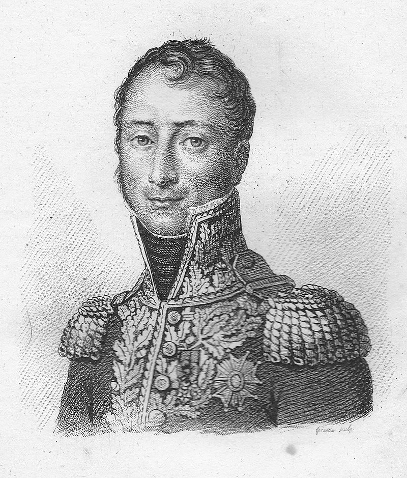
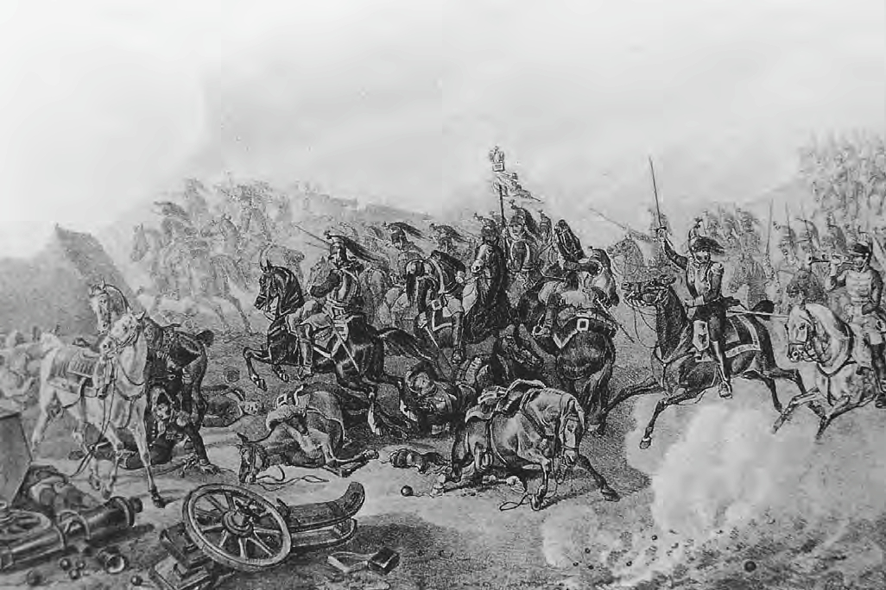
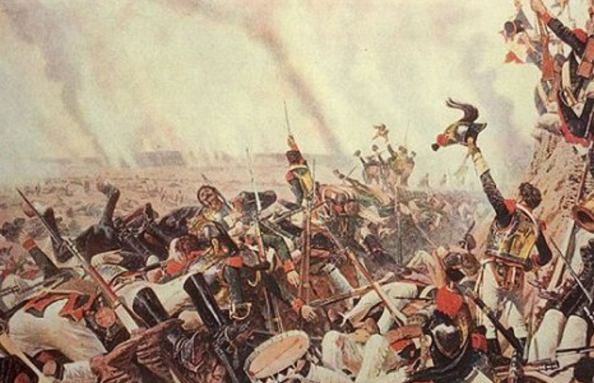
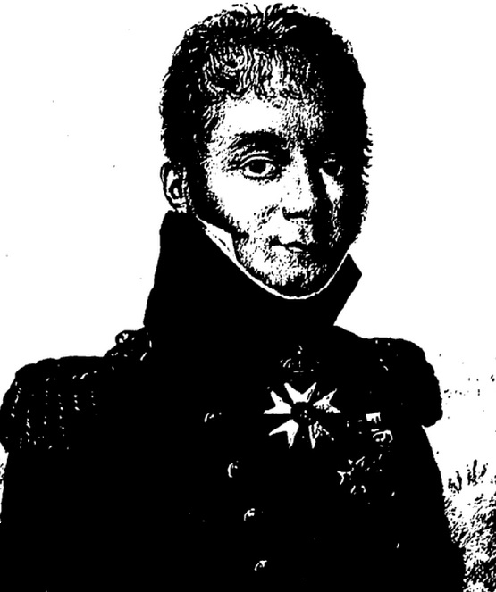

보로디노 전투 (11) - 기병대 영광의 순간
게시: 2020-10-05T06:30:23+09:00
역사상 기병대가 요새를 점령한 일은 흔치 않습니다. 말이 성벽을 뛰어 넘을 수는 없으니까요. 제 정신을 가진 기병대 지휘관이라면 성벽을 향해 돌격을 감행하지는 않습니다. 그러나 프랑스 기병대가 라에프스키 보루를 향해 돌격을 시작한 것은 나름 이유가 있었습니다. 나폴레옹은 아일라우(Eylau) 전투에서도 그랬고 바그람(Wagram) 전투에서도 그랬습니다만, 위기가 닥치거나 전황이 생각대로 돌아가지 않을 때 기병대를 냅다 적진에 집어던지곤 했습니다. 이때도 상황이 비슷했습니다. 최전선의 원수들이 차례로 전령을 보내 근위대를 투입해달라고 요청하는 것을 거부하기는 했는데, 그렇다고 그냥 알아서 어떻게든 이기라고 독촉하는 것도 말이 안되는 이야기였습니다. 나폴레옹은 나름대로 다 계획이 있었는데, 그게 바로 기병대였습니다. 오전 내내 치열하게 벌어진 전투에서 뮈라의 기병 군단들도 바그라티온의 철각보 일대의 전투에 투입되어 힘겹게 싸웠고, 또 북쪽에서 느닷없이 쳐들어온 러시아 코자크 기병들을 막아내느라 많이 지친 상태였습니다. 그러나 분명히 보병 사단들에 비하면 전투 투입되는 비율이 적었고, 손실도 더 적은 편이었습니다. 그러니 나폴레옹이 소중한 근위대 대신 그나마 아직 싸울 여력이 남은 기병대를 활용하여 돌파구를 뚫어보자고 생각하게 된 것은 당연한 결과라고 할 수 있었습니다. 게다가 셰바르디노 언덕에서 망원경으로 유심히 관찰해보니, 뜻하지 않게 전투의 중심지가 되어버린 라에프스키 보루는 오전에 워낙 집중 포격을 받아서 흙으로 쌓은 벽이 여기저기 허물어진 상태였습니다. 러시아군은 이 보루 벽 앞에 해자까지 파놓은 상태였습니다만, 어차피 포격으로 무너진 흙벽이 해자를 상당 부분 메워놓은 상태였습니다. 따라서 기병대로도 잘만 하면 보루 점령이 가능할 것 같았습니다. 라에프스키 보루가 프랑스군에게 골치를 안겨준 것은 바로 그 안에 잔뜩 배치된 대포 때문이었는데, 보병 대오가 느릿느릿 전진하여 공격하면 보루에서 쏟아지는 대포알에 큰 피해를 입을 수 밖에 없었지만 기병대가 바람처럼 달려서 보루 안으로 뛰어든다면 피해를 최소화할 수 있었습니다.

(동생 콜랭쿠르입니다. 그의 형 아르망 콜랭쿠르는 자신이 그토록 말렸으나 나폴레옹이 기어이 일으킨 이 전쟁에서 동생까지 잃어야 했으니 그 심정은 정말 찢어지는 듯 했을 것입니다.)
이런 나폴레옹의 지시를 받은 뮈라는 포격에 쓰러진 몽브렁 대신 콜랭쿠르(Auguste-Jean-Gabriel de Caulaincourt)에게 제2 기병군단의 지휘권을 맡기며, 라 투르-모부르의 제4 기병군단과 함께 라에프스키 보루를 점령하라고 지시를 내렸습니다. 콜랭쿠르는 나폴레옹의 마복시이자, 바로 직전까지 러시아 주재 프랑스 대사였던 아르망 콜랭쿠르(Armand-Augustin-Louis de Caulaincourt)의 동생이었는데, 당시 35세의 혈기 왕성한 소장(général de division) 계급이었습니다. 35세에 소장까지 진급했으면 상당히 성공한 인생이었지만 그는 나폴레옹의 심복인 4살 위의 형에 비해 자신은 업적도 공훈도 부족하다는 것을 잘 알고 있었고, 그만큼 뭔가 뛰어난 무훈을 세워 형 못지 않은 위대한 인물이 되기를 원했나 봅니다. 그는 어떻게 생각하면 무모하기 짝이 없는 자살 공격 명령을 받자 매우 활기찬 목소리로 '죽든 살든 전하께서는 저 보루 안에서 저를 곧 보시게 될 겁니다' 라며 큰 소리를 쳤습니다. 라에프스키 보루는 돌로 쌓은 높은 성벽이 아니라 흙으로 쌓아올린 낮은 토루로 된 성벽을 가지고 있었습니다. 그럼에도 불구하고 그 해자와 토루는 말이 단번에 뛰어넘을 수 있는 높이가 아니었습니다. 하지만 나폴레옹이 관측한 것처럼 보루 측면의 일부는 무너져 있었고, 특히 보루 뒷면에는 대포와 탄약, 인원이 출입하기 위한 출입구가 뚫려 있었습니다. 프랑스 기병대 지휘관들은 바보가 아니었고, 누구보다 용감했습니다. 돌격의 선두는 콜랭쿠르가 지휘하는 제2 기병군단이 맡았고, 그 뒤를 라 투르-모부르가 지휘하는 제4 기병군단이 따랐는데, 거기에 포함된 작센 기병대의 미어하임(Franz von Meerheimb) 대령이 남긴 기록에 따르면 잘 생긴데다 화려한 군복을 차려 입은 라 투르-모부르 장군은 이런 대기병군단을 이끌기에는 너무 젊어 보였으나 기병대를 이끌고 보루 앞까지 접근한 뒤 침착하게 토루를 우회하여 측면과 후면을 통해 보루 안으로 쏟아져 들어갔습니다.

(라에프스키 보루로 돌격하는 프랑스 흉갑기병대의 모습입니다. 외젠의 종군화가였던 알브레히트 아담(Albrecht Adam)의 그림입니다.) 이들이 돌격할 때 당연히 보루 안의 러시아 포병들은 미친 듯이 포탄을 날려보냈고 많은 사상자가 발생했습니다. 그 중의 하나가 콜랭쿠르였습니다. 결국 콜랭쿠르는 보루 안에는 들어가보지 못하고 그 앞에 쓰러졌으며, 그의 시체는 하얀 기병용 망토를 피로 흠뻑 적신 채 후송되었습니다. 그런 희생에도 불구하고 프랑스 기병대의 돌격은 성공적이었습니다. 보루 안의 러시아군은 프랑스 기병들을 몰아내려고 기를 쓰고 싸웠으나 역부족이었습니다. 전면에서 프랑스군 보병대가 전진해오는 마당에 측면과 후면에서 프랑스 기병대가 쏟아져 들어오니 막을 길이 없었던 것입니다. 미어하임 대령은 '양측이 모두 살기등등한 채로 미친 듯이 싸웠다'라고 적었습니다만, 좁은 보루 안에서는 갑옷을 입고 검을 든 채 높은 안장 위에 앉은 기병들이 유리했나 봅니다. 긴 머스켓 소총 또는 긴 장전봉을 휘두르던 러시아군은 곧 모두 쓰러졌습니다. 아무도 항복하지 않았고, 항복을 받으려 하지도 않았습니다. 이건 분명히 정상적인 상황이 아니었는데, 피가 분수처럼 터져나오는 보루 안에서는 그런 것을 생각할 여유가 없었습니다.

(라에프스키 보루를 점령하고 환호하는 프랑스 흉갑기병대의 모습입니다. 저기에 널브러진 시체들의 규모를 보면 환호할 때가 아닌 것 같습니다.) 전진하던 프랑스 보병대의 좌측면을 엄호하던 그루시(Grouchy)의 제3 기병군단 소속 기마 포병대의 그리와(Charles-Pierre-Lubin Griois) 대령은 비교적 후방 쪽에서 이 모습을 보고 있었는데 그 장관에 대해 이렇게 적었습니다. "이 대단한 무훈을 보며 우리가 느꼈던 감정을 그대로 전달하는 것은 불가능한 일이다. 아마 우리 기병대가 이때 세운 업적은 세계적으로도 비교 대상을 찾기가 어려울 것이다. 지켜보고 있던 우리 모두가 그 성공을 기원하고 있었고 그렇게 빗발처럼 쏟아지는 포도탄 속에서 해자를 뛰어넘고 토루를 넘어들어간 기병대원들을 어떻게든 도와주고 싶어 했다. 이윽고 이들이 보루를 점령하자 사방에서 우뢰와 같은 환호 소리가 일어났다."

(그리와 대령입니다. 그는 왕당파 아버지 밑에서 컸으나 정규 포병 장교 학교를 졸업한 쓸모있는 포병 장교였으므로 혁명 정부 치하에서도 별 어려움 없이 군 생활을 했습니다. 일찍부터 이탈리아 방면군에서 복무하다가 뮈라의 나폴리 왕국군에 배속되기도 했으며, 1809년 아스페른-에슬링 전투 때부터 이탈리아 방면군 소속으로 유럽 중앙 무대에서 싸웠습니다. 그는 나폴레옹 몰락 이후에도 큰 변화 없이 군 생활에 충실했습니다.) 이제 러시아군 방어선의 핵심인 라에프스키 보루를 점령했으니 전선을 돌파한 셈이었습니다. 이제 남은 것은 러시아군 후방으로 쏟아져 들어가 혼비백산한 러시아군의 측면과 후면을 공격하는 것이었습니다. 그러기 위해 프랑스 보병들과 그리와 대령이 포함된 그루시의 기병군단도 보루의 왼쪽 측면을 돌아 그 후방으로 쏟아져 들어갔습니다. 그러나 그들이 발견한 것은 수백 미터 뒤에 보병방진으로 정렬한 채 그들을 기다리고 있는 러시아군의 모습이었습니다. 바클레이였습니다. Source : 1812 Napoleon's Fatal March on Moscow by Adam Zamoyski
en.wikipedia.org/wiki/Battle_of_Borodino
napoleonistyka.atspace.com/Borodino_battle.htm
fr.wikipedia.org/wiki/Charles-Pierre-Lubin_Griois